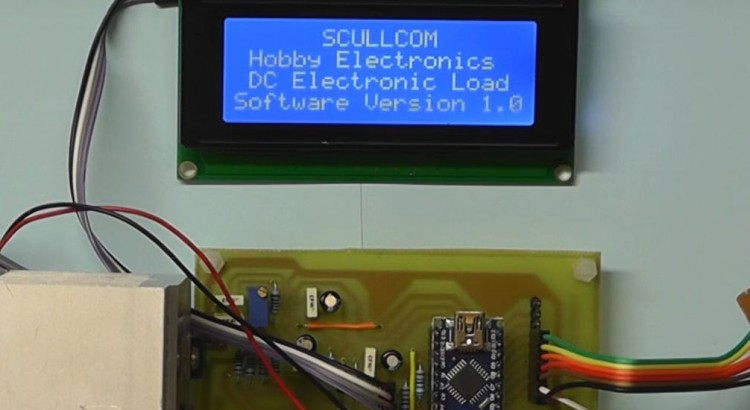

In this project we will design and build a Function Generator. The Frequency will be controlled by using a rotary encoder and functions controlled by push buttons. A 20 x 4 LCD and Arduino Nano will also be used for the user interface and control. Below are the download links for this project: Ardunio software […]
Category: Projects
DC Voltage Calibrator
Part 1 In this project we will design and build a DC Voltage Calibrator, providing a voltage range from 0 to 10 volts in 1 milli volt steps. The user interface will be a TFT display with touchscreen. Below are links to version 1 of the software for the Arduino Nano. Also a zip file […]
Build a Sinclair ZX80 Clone
In this project we will build a Sinclair ZX80 Clone with 16KByte of RAM and a 16KByte EPROM with dual ZX80 and ZX81 ROM images which can be switched by selector links. We will use the ZX80 Minstrel PCB from Tynemouth Software for this project (www.tynemouthsoftware.co.uk). Link for ordering PCB is below: https://www.thefuturewas8bit.com/shop/tynemouth-products/minstrel-zx80.html&v=M7MpMr0sfh4&event=video_description Below are […]

Design & Build an Electronic DC Load
In this project we will design an build an Electronic DC Load which is capable of Constant Current, Constant Power and Constant Resistance. The design will use a rotary encoder for input entry and a 20×4 LCD display as the user interface. In Part 1 of this project we will discuss the basic design and […]
Millivolt Meter MK2
This version of my Millivolt Meter is an upgrade on my previous project version and uses a small PCB and Arduino Pro Mini. The display now uses an I2C interface. The build now includes a Hold Reading and Bar Graph display. In addition the calibration method has been upgraded to use a 5 volt reference […]
Milliohm Meter Update
This is an update to my earlier Milliohm Meter project. Here we use a small custom PCB which is available to use. There are also some improvements to the design and the project is built in to a small case. Below are the links to download the updated schematic, front panel artwork, drill template for […]
Design & Build a Pulse Generator – Part 1
In this project we will design and build a pulse generator using a LTC6992 from Linear Technology. In this first part we will test the functions of this IC to change both frequency and duty cycle (pulse width). Other parts to this project will build on this basic design with additional features and modifications/improvements. The […]
Design & Build a Stair-Step Waveform Generator
In this project we will design and build a Stair-Step Waveform Generator which gives a 5 volt peak-to-peak output with steps of 1 volt. Both a fixed oscillator and variable oscillator options will be included. A rotary switch will also give access to additional step waveforms. A 74HC4017 Johnson Counter is used to […]
Design & Build a Low Current Reference Source
In this project we will design and built a Low Current Reference Source which has four switched ranges, namely; 100μA, 200μA, 300μA and 400μA. No calibration is required and it will operate from a standard 9 volt battery with no on/off switch. The unit will have an accuracy of ±0.5% or better. This project […]
Design & Build a GPS locked Frequency Standard – Part 4
In this 4th part of this project we upgrade the software to give satellite data and frequency lock display. Plus the current frequency on the display is improved to give reading in MHz, KHz or Hz. The new software version can be downloaded from the link below: http://www.scullcom.com/GPS_Ref_Version6.zip PLEASE NOTE TO COMPILE THIS CODE YOU […]